가격대비 좋은 먹이기
알파파는 콩과 건초가 섞인 사료로, 국산 알파파와 수입 알파파가 있는데, 수입보다 국산이 더 좋은 것으로 가격은 좀 더 비쌉니다. 보통 아기 토끼 같은 경우 한달아 2~3kg 정도 먹는데 대략 한 달에 5~6천원 정도 잡으시면 됩니다.
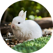
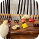
앵무새의 올바른 식이는 탈모 예방에 중요합니다. 앵무새에게 균형잡힌 식사를 제공해야 해요! 과일, 씨앗, 채소, 단백질을 포함한 다양한 식사를 제공하고 영양소가 풍부한 사료를 잘 선택하여 제공해줘야 합니다.
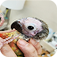
앵무새는 스트레스에 취약한 정말 예민한 동물 입니다. 스트레스를 받지 않게 해주는 것이 매우 중요합니다. 새장은 항상 청결하게 유지되어야 하고 소음이나 갑작스러운 환경 변화를 피하며,적절한 새장 크기와 장식으로 앵무새가 편안한 환경을 조성해야 합니다.

앵무새의 피부는 건강하고 적절한 관리가 필요합니다. 항상 깃털 청결을 유지하고 언제든 목욕을 할 수 있게 해주어야 하며, 피부문제가 있는 경우에는 바로 병원에 방문하셔야 합니다.
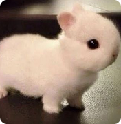
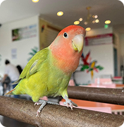
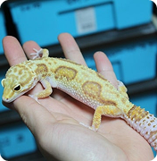
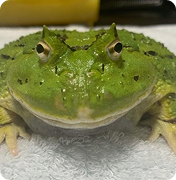
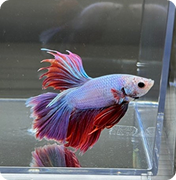
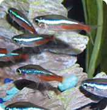
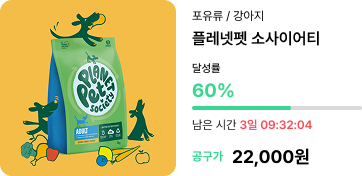
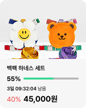
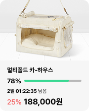
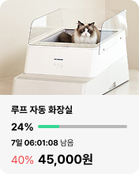
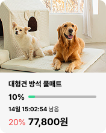